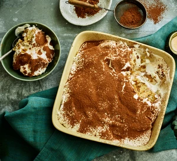

Back to Homepage
Vegan Tiramisu

Image and recipe source: BBC Good Food
Tiramisu is a coffee-flavoured Italian dessert that translates to "pick me up", rather fitting really. So make this great dish and get the perfect pick-me-up for the perfect day off!
Recipe
Ingredients
- 250ml pot whippable plant cream
- 1 tbsp icing sugar
- 1 tsp vanilla bean paste
- 2 tbsp coffee liqueur, or dark rum
- 100ml coffee, cooled
- 1 ½ tbsp golden caster sugar
- 2 tbsp cocoa powder
For the sponge
- 100g dairy-free spread, plus extra for the tim
- 200ml dairy-free milk
- ½ tbsp cider vinegar
- 2 tsp vanilla extract
- 125g golden caster sugar
- 200g self-raising flour
- ½ tsp baking powder
Method
- Heat the oven to 180C/160C fan/gas 4. First, make the sponge. Using a little dairy-free spread, butter and line a 20cm x 30cm tin (or 25cm square).
- Put the dairy-free milk in a jug and stir in the vinegar and extract, and leave for a few minutes to thicken. Beat the dairy-free spread and sugar together until creamy, then beat in the thickened milk mixture, flour, a pinch of salt and the baking powder until you have a smooth batter.
- Scrape the batter into the tin and bake for 20-25 mins until lightly golden and risen, and a skewer comes out clean when inserted into the middle. Leave to cool in the tin for 10 mins, then transfer to a rack to cool completely.
- Whip the plant cream with the icing sugar and vanilla bean paste until softly whipped. Mix the liqueur, coffee and caster sugar in a bowl. Cut the cooled sponge into 16-18 sponge fingers.
- Add half the sponge fingers to a small serving dish (about 15cm x 20cm), breaking them up to fill any gaps. Using a pastry brush, brush the sponge with some of the coffee mixture. It won’t absorb as much as regular sponge fingers, so add gradually until they are lightly soaked. Spoon over half the cream mixture, then add the remaining sponge fingers. Brush again with the coffee mixture, then add the remaining cream and chill for a few hours or overnight. Sieve over the cocoa powder to serve.
Back to Homepage | Back to top